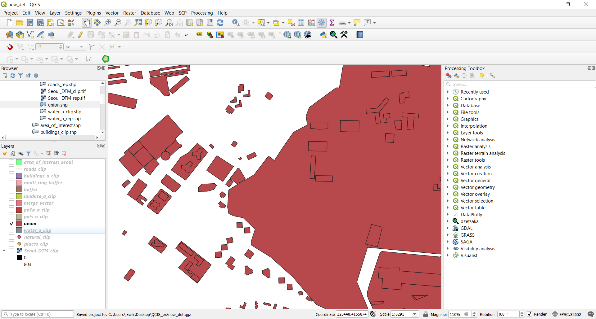

3.3. Overlay operations¶
3.3.1. Union¶
The Union function, available at Vector->Geoprocessing->Union, provides an algorithm that checks overlapping features within an input layer and creates separate features for overlapping and non-overlapping parts. The area of overlap will create as many identical overlapping features as there are features that participate to that overlap.
In this exercise, we will perform an Union between the
pois_a_cliplayer (points of interest) and thebuildings_a_cliplayer, so that we will get a layer representing both residential buildings and interest/public buildings. The input parameters are:
- Input layer:
pois_a_cliplayer- Overlay layer:
buildings_a_cliplayer- Union: the path and the name of the output vector layer. Note that if left empty a temporary layer will be created
The result, if zoomed, should look like the following:
Fig. 3.3.1.2 As you can see now both residential and interest/public buildings are contained in the same vector layer
{kind=link}
{kind=link}
3.3.2. Intersection¶
We can now look at the Intersection function. It is available at Vector->Geoprocessing Tools->Intersection, and it provides a function that extracts the overlapping portions of the features of two layers and assigns these portions the attribute of both layers. We use it to see which buildings are also religious buildings. The input parameters are:
- Input layer:
buildings_a_cliplayer- Overlay layer:
pofw_a_cliplayer- Intersection: the path and the name of the output vector layer. Note that if left empty a temporary layer will be created
The results should look like the following picture:
{kind=link}
{kind=link}
3.3.3. Dissolve¶
We will now use the Dissolve function applied to the
landuse_a_cliplayer. The Dissolve function, available at Vector->Geoprocessing tools->Dissolve, provides an algorithm that takes a vector layer and combines their features into new features. One or more attributes can be specified to dissolve features belonging to the same class (having the same value of a specific attribute); if no attribute is selected, all features will be dissolved into a single one. We will create a new landuse layer that has as many features as the different types of land use. The input parameters are:
- Input layer: the
landuse_a_cliplayer- Dissolve fields: click the icon on the left and select the “fclass” attribute
- Dissolved: the path and the name of the output vector layer. Note that if left empty a temporary layer will be created
If you now check the attribute table of the newly created layer it should have only a few features, each corresponding to one type of land use.
{kind=link}
3.3.4. Difference¶
We can now use the newly created
landuse_dissolvedlayer to perform a Difference operation. Difference is a function available at Vector->Geoprocessing Tools->Difference, that extracts features of an Input layer that fall outside features in the Overlay layer (totally or partially). If a feature of the Input layer partially overlaps a feature of the Overlay layer only the portions outside the Overlay layer features are retained. We will use it to filter out all the natural land use leaving only the industrial and urbanized ones. To do so, first, we have to select the natural land use features:
Right-click on the
landuse_dissolvedlayer on the Layers panelOpen its Attribute table
Manually select the features having natural land use classes (like the following ones) by holding Ctrl and clicking on the row number on the left
Now that we have selected those features, we can go on with the Difference operation. The input parameters are:
- Input layer: the
landuse_a_cliplayer- Overlay layer: the
landuse_dissolvedlayer, but be sure to check the “Selected features only” checkbox- Difference: the path and the name of the output vector layer. Note that if left empty a temporary layer will be created
The result will be a land use layer that only retains the features with industrial and urbanized land use types.
{kind=link}
{kind=link}
3.3.5. Symmetrical difference¶
The Symmetrical difference, available at Vector->Geoprocessing Tools->Symmetrical Difference, provides a function that extracts the portions of features from both the Input and Overlay layers that do not overlap. The attribute table of the Symmetrical Difference result layer contains original attributes from both the Input and Overlay layers.
If you look at the
landuse_a_cliplayer, you will see it has some portions that overlap with water features:Fig. 3.3.5.1 Water bodies (gray) overlapping landuse features (green)
Fig. 3.3.5.2 Only landuse features (green)
We will use the Symmetrical difference to obtain a land use layer with no feature that has parts in water bodies. To do so, the input parameters are:
- Input layer:
merge_vectorlayer- Overlay layer:
water_a_cliplayer- Symmetrical Difference: the path and the name of the output vector layer. Note that if left empty a temporary layer will be created
Once the execution is done, the results should look like this:
{kind=link}
3.3.6. Spatial join¶
As you saw with the Intersection function we can find the buildings that are also religious places. We will now use the Join Attributes by Location function (generally known as Spatial Join) available at Vector->Data Management Tools->Join Attributes by Location, to extend the previous analysis. The Join attributes by location is a function that takes an input vector layer and creates a new vector layer that is an extended version of the input one, with additional attributes in its attribute table. This additional attributes and their values are taken from a second vector layer applying spatial criteria to select the values from the second layer that are added to each feature from the first layer in the resulting one. In this way we could add the attribute that specifies the religion practised in a particular building; the input parameters are:
- Input layer: the
buildings_a_cliplayer- Join layer: the
pofw_a_cliplayer- Geometric predicate: within
- Fields to add: click on the icon on the left and select the “fclass” attribute
- Join type: take attributes of the first located feature only (one-to-one)
- Tick the “Discard record which cannot be joined” option
- Joined layer: the path and the name of the output vector layer. Note that if left empty a temporary layer will be created
If you now look at the attribute table of the newly created layer, you will see a new attribute (fclass_2) that represents the religion practiced in that building.
Note
The Join Attributes by Location function, specifying the “intersects” predicate, also translates the “Identity” function of ArcGIS
{kind=link}